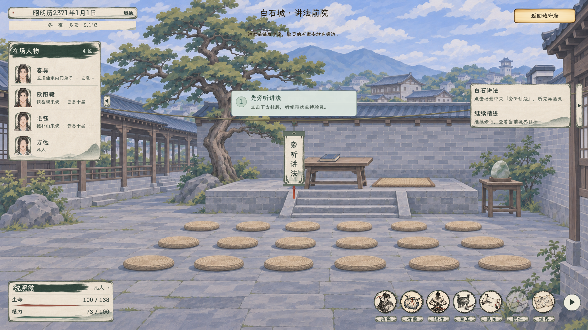
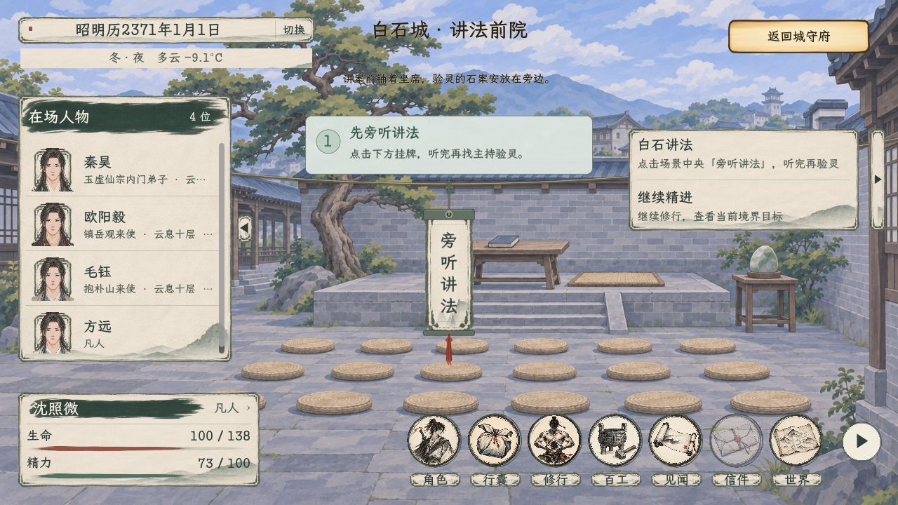
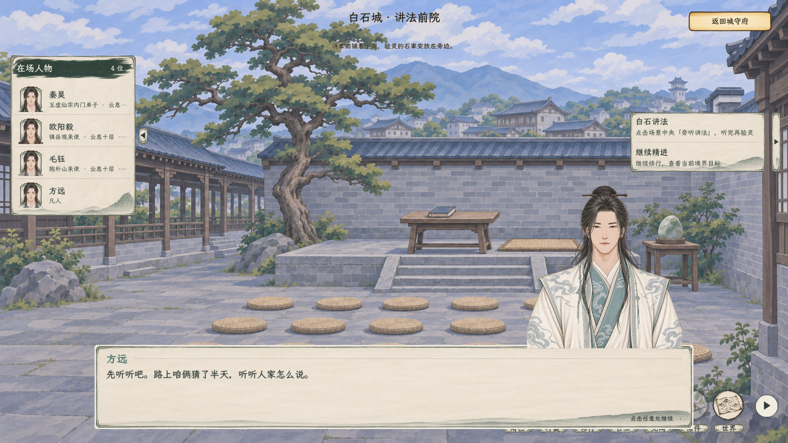
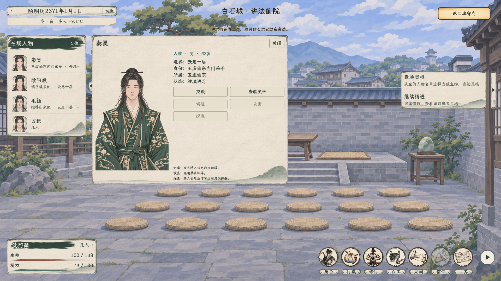

<!doctype html>
<html lang="zh-CN">
<meta charset="utf-8">
<meta name="viewport" content="width=device-width, initial-scale=1">
<title>白石讲法 · 入场引导实机</title>
<style>
body { margin: 0; padding: 28px; background: #e8ede8; color: #303d38; font: 16px/1.7 system-ui, sans-serif; }
main { max-width: 1500px; margin: auto; }
h1 { font-size: 25px; font-weight: 500; }
.gallery { display: grid; grid-template-columns: repeat(auto-fit, minmax(min(100%, 540px), 1fr)); gap: 20px; }
figure { margin: 0; padding: 10px; border: 1px solid #9eafa1; background: #f1f4ef; }
img { width: 100%; height: auto; display: block; }
figcaption { padding: 8px 4px 2px; }
</style>
<main>
<h1>白石讲法 · 入场引导</h1>
<p>独立灰绿步骤浮层指向中央“旁听讲法”。点击后进入原讲解，听完再从人物名单找本期主持验灵。</p>
<div class="gallery">
<figure><a href="讲法初入_中央挂牌引导.png"></a><figcaption>1920×1080：首次入场、步骤提示与实际入口</figcaption></figure>
<figure><a href="讲法引导_1280.png"></a><figcaption>1280×720：提示避开名单及挂牌</figcaption></figure>
<figure><a href="点击挂牌_讲法对白.png"></a><figcaption>点挂牌接原讲法对白，引导收起</figcaption></figure>
<figure><a href="听讲后_从人物名单验灵.png"></a><figcaption>听完后从名单选择实际主持，办理验灵</figcaption></figure>
</div>
</main>
</html>
